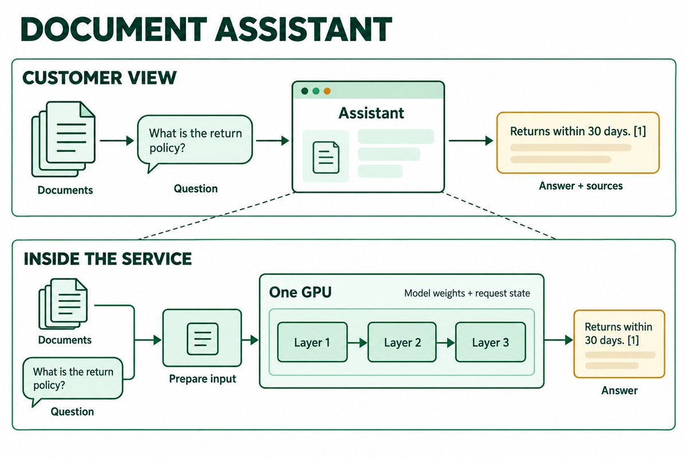
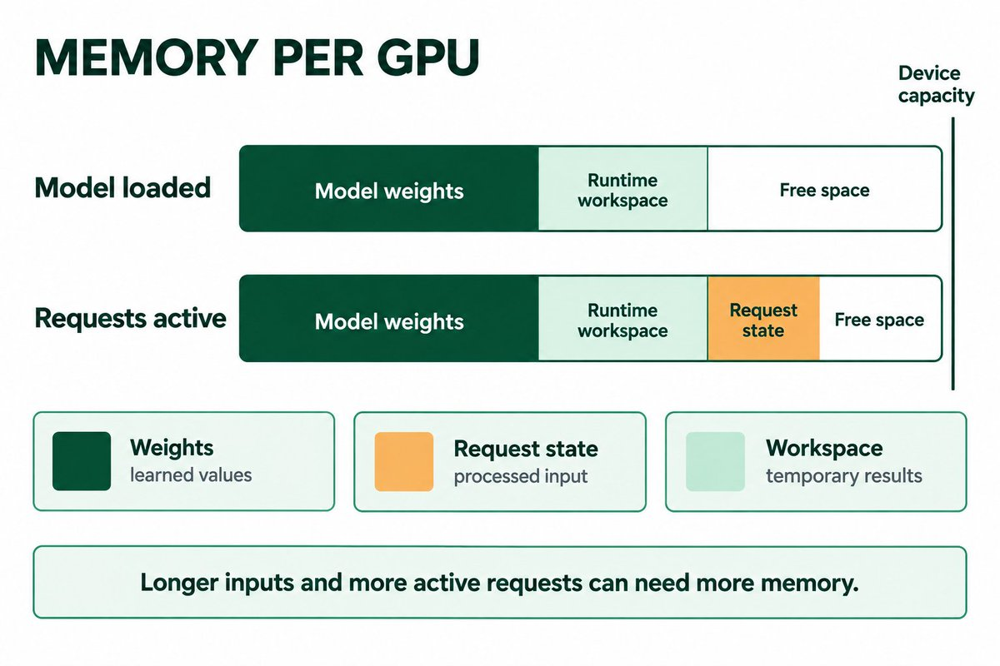
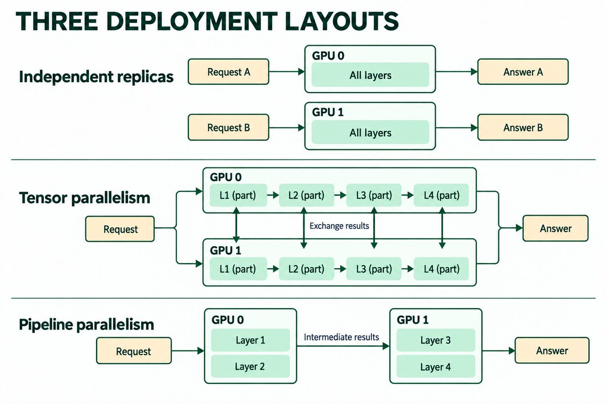
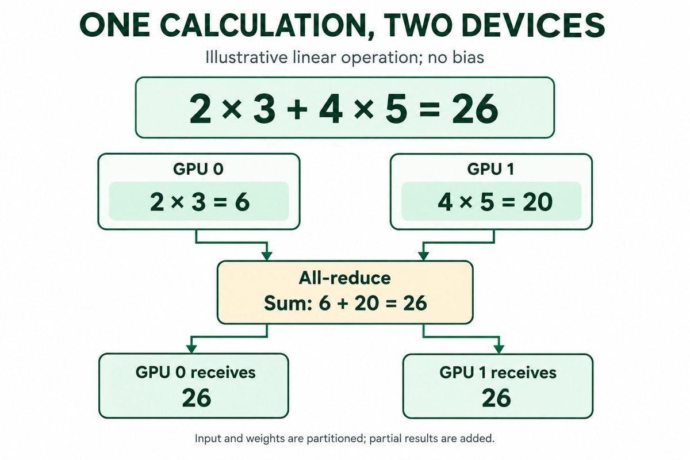
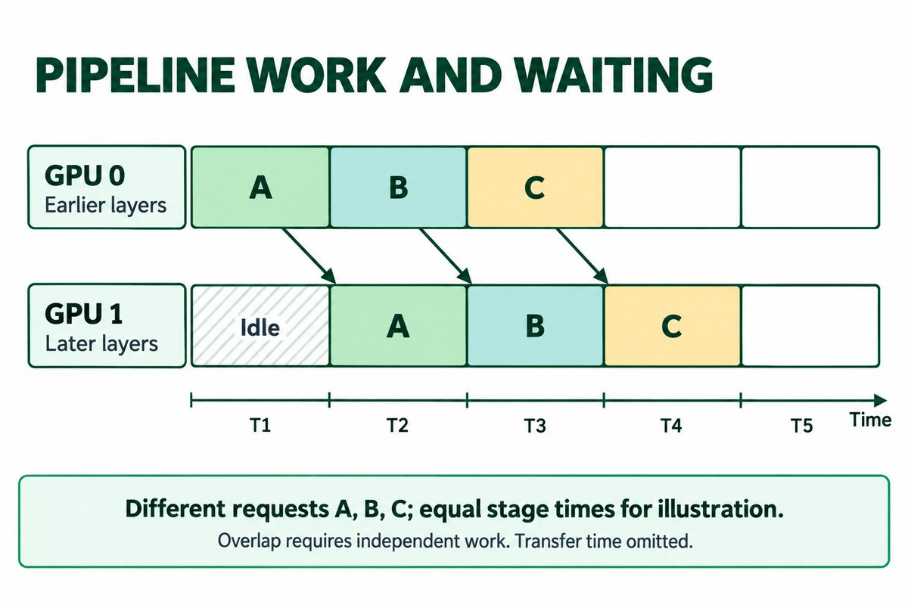

部分AI应用所需的模型过大，无法在单块GPU上运行。模型并行让多块GPU协同运行同一个模型。下面说明其工作原理、适用场景，以及如何测试它对响应时间和成本的影响，并附vLLM和PyTorch的示例。
它建立在A Beginner’s Guide to Inference Engineering的基础上，该指南介绍了这一领域、其重要性，以及软件工程师如何入门。
设想一个文档助手。客户上传一份政策文档并提出问题。助手返回答案，并给出该文档中的引用出处。
团队运行自己持有的模型。vLLM文档问答示例会切分网页文档、检索相关文本并生成答案。文件上传与来源引用需要额外的应用代码。
团队在具有代表性的文档和问题上评估候选模型，选出满足答案质量要求的模型。该模型必须在约定的响应时间和成本限制内，支撑预期的文档长度和请求量。

模型使用称为权重的学习得到的数值。语言模型通过一系列层处理输入：这些层是转换数值表示的操作组。一个层的输出会成为后续操作的输入。层内操作序列参见LlamaDecoderLayer.forward()。中间值通常称为激活值。
运行时是加载模型并执行这些操作的软件。在此示例中，它使用图形处理器，即GPU。GPU可以并行执行大量数值运算，并拥有自己的设备内存。
文本被转换为token，例如单词、词片段或标点符号。模型首先处理输入。随后按步骤继续生成输出。缓存的注意力数据称为key-value cache或KV cache，可让后续步骤复用先前token的状态。
GPU需要内存来同时容纳模型权重和活跃请求。
在机器学习软件中，张量是形状已定义的数值数组。标量、向量和矩阵是它的特例：
● 标量：单个数值，例如3。它没有轴。
● 向量：一个列表，例如 [2, 4, 6]。它有一个轴，形状为 [3]。
● 矩阵：一个网格，例如 [[1, 2, 3], [4, 5, 6]]。它有两个轴，形状为 [2, 3]：两行三列。
张量可以有更多轴。形状记录每个轴的大小。对于文档助手，一种可能的表示形状为 [2, 100, 768]：两个输入序列，每个序列100个token位置，每个位置768个数值特征。这些示例数值描述的是一种排布方式，而非某个特定模型。PyTorch tensor tutorial代码展示了构造、形状、数据类型和设备检查。此处，一个特征是该token数值表示的一个分量。
模型由层组成。每一层对张量执行运算。权重张量保存学习到的参数。激活值张量保存当前输入的中间结果。KV cache也存储张量。张量描述数值如何组织；“权重”“激活值”“cache”描述它们的作用。
张量还具有数据类型，例如16位浮点格式，并存储在CPU或GPU等设备上。Shape决定值的数量。数据类型决定其存储大小。设备放置决定运算运行的位置。参见PyTorch tensor指南。
张量并行在模型层内将选定的张量及其运算划分到多个GPU上。例如，权重矩阵可沿某个轴拆分，使每个GPU存储并计算其中一部分。拆分必须保持该层的计算结果不变。
长文档和多个活跃问题会增加请求状态内存。部署还需要临时工作区和运行时开销空间。能够成功加载的模型在客户请求到达时仍可能耗尽内存。在vLLM中，Worker.determine_available_memory() 会进行内存使用性能分析，并计算剩余的KV cache预算。分配取决于输入长度和并发数：即同时活跃的请求数量。

如果选定的模型无法在单个GPU的容量内运行，工程师可以评估更小的模型、降低精度、使用内存更大的设备，或跨设备执行。每种方案仍必须满足答案质量和服务要求。
模型并行将存储和计算划分到多个设备上，但会增加通信和协调成本。
副本是模型的一个完整可运行实例，可占用一块GPU，也可跨越多块GPU。两个相互独立的副本可以分别处理不同的问题。vLLM多实例示例配置了两个数据并行实例，张量并行大小为1，并将请求发送到选定的实例。每个副本必须为其自身的模型和请求提供足够的内存。
采用张量并行时，每块GPU存储并计算模型层内选定部分的张量。GPU之间按实现要求交换或合并结果。
流水线并行将若干层组成的分组放置在不同的GPU上。一块GPU运行较早的层，并将中间结果传递给承载较晚层的GPU。同一个请求依次经过两个阶段。在vLLM的LlamaModel中，start_layer与end_layer选定本地层；非最终阶段返回中间张量。

vLLM是开源的模型推理服务运行时。线性运算将输入值与权重相乘并对各项贡献求和。一个完整的线性层执行大量此类计算，并可加上偏置，即额外学习到的值。
对于无偏置的计算：2 × 3 + 4 × 5 = 26。将输入和权重分成两部分。GPU 0计算2 × 3 = 6。GPU 1计算4 × 5 = 20。将两部分的结果相加即可得到26。

all-reduce（全规约）将各部分的贡献合并，并使合并结果对每个参与设备可用。图中的中心求和描述的是逻辑操作，并不意味着存在独立的中央服务器。实际实现传输的是数组，而非这个单一数值。vLLM的all-reduce（全规约）入口点将张量操作分发到选定的通信路径。
在锁定的vLLM实现中，RowParallelLinear.forward() 遵循以下模式：
1 使用已分配给该worker的输入分片，或拆分输入并选择其对应的部分。worker的rank标识其在组中的位置。
2 使用该worker的权重分片执行本地线性运算。
3 当结果归约已启用且多个分片参与时，调用tensor_model_parallel_all_reduce() 合并部分输出。
该实现还避免fused bias被每个worker各加一次。ColumnParallelLinear.forward() 采用不同的切分方式：各worker产生不同的输出特征。运行时可以收集这些特征，也可以保持分片状态以适配下一个兼容操作。张量并行并不要求每次交换都是求和。
切分之后，GPU之间需要传输数据。带宽决定一条链路每秒能传输多少数据。传输延迟和同步同样重要，尤其是频繁的小规模交换。更快的本地计算可能被通信或等待所消耗的时间抵消。
工程师必须检查实际的GPU连接，并测量运行时使用的通信路径。同一台机器内的设备未必具有等价的连接。
后续层必须等前面的层产出结果才能处理请求。在有独立工作可做时，各阶段可以重叠处理不同请求。空闲间隔称为流水线气泡。各阶段耗时不均、启动和排空都会导致设备闲置。在自回归生成中，每个新token都依赖前一个token完成模型路径。增加阶段数并不能消除这一依赖。vLLM的流水线worker代码接收中间张量，执行模型，并把结果发送到下一阶段。

更多活跃请求可以提供可重叠的工作，但也需要内存，并可能增加等待时间。无论空闲还是计算，业务都在为已分配的GPU付费。
先准备固定文档、问题、预期来源引用和答案质量检查。定义可接受的响应时间、峰值请求量和每个被接受答案的成本。单独保留一个质量测试集用于最终验收。性能测量方面，检查vLLM的请求生成器和指标计算。答案质量与来源准确性需分别检查。
按参数量 × 每权重比特数 ÷ 8估算权重存储。再计入请求状态、激活值、临时工作区、通信缓冲区、分配开销和运行余量。用实测的单设备内存修正估算值。分布式布局可能保留部分复制状态，因此内存不一定能均分。
若模型可放入单张GPU，对比前两种布局：两个独立的单GPU副本与一个双GPU张量并行副本。使用相同的总硬件和相同的incoming请求模式。
若模型无法放入单张GPU，将该基线标记为不可行。对比可行的受支持布局，例如在同时支持张量并行与流水线并行时对比两者。记录任何无法避免的配置差异。
同一revision下的vLLM部署指南记录了配置与执行后端。对照所测版本检查模型兼容性和分片约束。
1 记录模型、运行时修订版本、数值格式、GPU布局、prompt、输入限制和输出设置。保持无关优化固定不变。
2 加载每个可行配置。检查每设备内存和请求余量。
3 运行一个提问。检查答案质量、来源引用、首个输出时间和总响应时间。
4 在递增的有界到达率下重放固定工作负载。记录每秒完成的请求数、排队时间、通信时间、内存、错误和P95响应时间。P95指95% 的观测响应时间处于或低于该值。
5 测试长输入和目标并发度。将冷启动与预热后的运行区分开。在计时结果旁标注样本数以及输入/输出长度。
根据所有已分配设备及其占用时间计算每个被接受答案的成本。计入失败请求和重试。保持质量判定标准固定，使更短但不完整的答案不会被误认为性能提升。
仅当某种布局满足助手在质量、内存、响应时间、流量和成本方面的要求时才采用。若通信占主导，则排查链路或更小的并行组。若某个流水线阶段占主导，则检查分配给它的工作。若完整模型能够放入，且独立副本能以更高效率满足要求，则使用独立副本。
分布式副本依赖多个worker；单个worker故障可能中断整个实例。在隔离环境中测试故障与恢复。检查流量如何被排空、重新路由和恢复。保留一个已知良好的部署用于回滚。
当模型、运行时、硬件连接、文档长度或流量发生变化时，重复执行验收检查。
部分模型包含成组的专用神经网络组件，称为专家。路由机制为每个token选择专家。专家并行将这些专家分布到各设备上。它引入了路由、传输和负载均衡方面的考量，并可与其他布局组合使用。在vLLM的MixtralMoE中，gate产生路由分数，expert模块处理隐藏状态张量。代码还会根据专家并行组大小推导出本地专家数量。
主要概念来源：Philip Kiely, Inference Engineering, Baseten Books, 印刷版第142–148页。文档助手、算术示例、内存条和时间线均为教学示例。
Philip Kiely, Inference Engineering: https://www.baseten.co/inference-engineering/
vLLM并行线性层源码（锁定版本）: https://github.com/vllm-project/vllm/blob/435c96f9dbdd29258cb8e0f433c5b54a00cf6b16/vllm/model_executor/layers/linear.py
vLLM并行与扩展文档（锁定版本）: https://github.com/vllm-project/vllm/blob/435c96f9dbdd29258cb8e0f433c5b54a00cf6b16/docs/serving/parallelism_scaling.md
Megatron-LM张量并行设计: https://arxiv.org/abs/1909.08053
参考：https://x.com/danialhasan/status/2099860796545052830